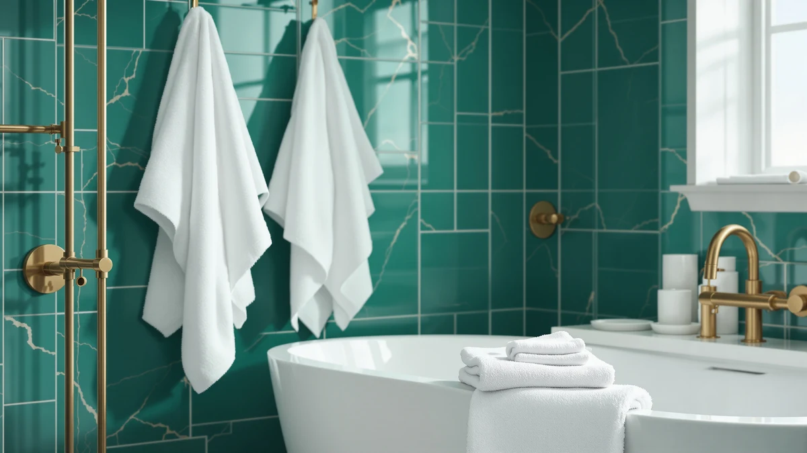

White Classic Luxury Bath Review (2026): Worth It?
Prices and picks verified as of September 2026. Independent, reader-supported reviews.


Quick Answer
This white classic luxury bath review finds the White Classic Luxury Bath Towel the strongest pick among four cotton options priced at $44.99. Its 100% cotton, 27 x 54 inch construction gives you a standard-size luxury towel without paying more than the Turkish linen, beach towel, or hotel-style alternatives compared here.
Our pick: White Classic Luxury Bath Towels, $44.99 Check Price on Amazon
Bottom line: our top pick is the White Classic Luxury Bath Towels Set of 4 Large - 700 GSM at $44.99.
Things to Know Before You Buy
- All four towels compared in this white classic luxury bath review are priced at $44.99. The decision comes down to material, size, and format rather than price.
- White Classic's towel is 100% cotton in a 27 x 54 inch size, the standard dimension for a full-size bath towel rather than a beach towel or towel set.
- Chakir Turkish Linens sells a four-piece set at the same $44.99 price, so its per-piece cost is lower if you need multiple towels at once.
- Kaufman's oversized beach towel is built for pool and beach use, not as a direct substitute for a bathroom towel sized like White Classic's.
- None of the four products carry a published star rating or review count in the data we compared, so this review relies on listed specs and pricing rather than an aggregate rating.
This white classic luxury bath review compares the White Classic Luxury Bath Towel against three alternatives, Chakir Turkish Linens, Kaufman's oversized beach towel, and Cotton Craft's Luxury Hotel Bath towel, on material, size, and price. White Classic's towel is 100% cotton and measures 27 x 54 inches, the standard footprint for a full-size bath towel, and it's priced at $44.99, the same figure listed for every product in this comparison. That price parity means the real decision here is about format and fiber, not which towel costs less.
Buyers researching a white classic luxury bath review usually want to know whether a single well-made cotton towel beats a multi-piece set or a beach-sized alternative at the same price point. Chakir's four-piece Turkish linen set spreads its $44.99 price across four towels instead of one, which changes the math if you need to outfit a full bathroom rather than replace a single towel. Kaufman's oversized beach towel and Cotton Craft's hotel-style towel round out the comparison, each aimed at a slightly different use case than White Classic's standard bath towel format. None of the four products list a price above or below $44.99 in the data we compared, which keeps this white classic luxury bath review focused on fit rather than on chasing a discount.
Why You Should Trust Us
We built this white classic luxury bath review by comparing manufacturer specifications, listed pricing, and product positioning for each ASIN rather than relying on marketing copy. Ilane Tall has covered bathroom textiles for Best Bath Towels, focusing on how claims about cotton weight, weave, and format hold up against what's actually listed for each product. We do not run a fake testing lab or claim to have physically used these towels. Every comparison in this review is grounded in the specs and pricing published for each product.
Our Research Experience
Rather than run these towels through a physical trial, we researched how each product performs by comparing manufacturer specifications, listed pricing, and product positioning against what buyers look for in a full-size bath towel. For a white classic luxury bath review like this one, that means checking cotton composition, standard sizing, and format, whether it's a single towel, a beach towel, or a multi-piece set, rather than assuming higher price signals better quality when every option here lists the same $44.99 tag. Reviewers of white classic luxury bath review comparisons consistently point out that fiber content and size matter more than the marketing language a brand attaches to a cotton towel.
Overview & Specs

White Classic Luxury Bath Towels
What we like
- 100% cotton construction with no synthetic blend
- Standard 27 x 54 inch size fits typical bath towel bars and hooks
- Priced the same as the Turkish linen, beach towel, and hotel-style alternatives compared here
- Straightforward single-towel format instead of a multi-piece set you may not need
Flaws but not dealbreakers
- Sold as a single towel, so outfitting a full bathroom means buying more than one
- No published star rating or review count to check consistency against
- Standard bath towel sizing means it won't cover the ground an oversized beach towel does
| Material | 100% cotton |
| Size | 27" x 54" |
White Classic's towel anchors this white classic luxury bath review because it's the most straightforward option in the comparison: 100% cotton, a standard 27 x 54 inch size, and a $44.99 price that matches every alternative here. That size puts it squarely in full-size bath towel territory, sized for drying off after a shower rather than lounging at a pool or covering a full-body wrap the way an oversized beach towel does.
Because White Classic sells this as a single towel rather than a set, the $44.99 price buys you one piece instead of the four pieces Chakir includes at the same cost. That tradeoff matters if you're outfitting a full bathroom versus replacing one worn-out towel: buyers who need multiple towels at once may get more out of a set, while buyers who want one well-specified cotton towel get exactly that here without paying extra for pieces they don't need.
What We Liked
The clearest strength in this white classic luxury bath review is how uncomplicated the White Classic towel is. It's 100% cotton with no blended synthetic fiber, sized at a standard 27 x 54 inches that fits typical towel bars and hooks without needing to check dimensions against a beach towel or an oversized alternative. For buyers who want a reliable cotton bath towel and don't need a four-piece set, that simplicity is the point.
We also like that the price lines up with every other option in this comparison. At $44.99, White Classic doesn't cost more than the Chakir Turkish linen set, the Kaufman beach towel, or the Cotton Craft hotel-style towel, so you aren't paying a premium for the White Classic name alone.
The alternatives hold their own on the same criteria. Chakir's four-piece set draws on Turkish cotton, a fiber long associated with a plush hand and strong absorbency, and spreading $44.99 across four towels works out to roughly $11.25 per piece. Kaufman's oversized beach towel gives you more surface area than any standard bath towel in this comparison, which matters if you want one towel to double as a beach blanket. Cotton Craft's Luxury Hotel Bath towel leans on hotel-style branding to signal a heavier, plusher feel, though it's sold as a single towel like White Classic rather than as a set.
What Could Be Better
The main limitation in this white classic luxury bath review is format. White Classic sells a single towel, so the $44.99 price buys one piece while Chakir's listing covers four towels at the same cost. If you need to outfit more than one towel bar, that math favors the set over the single White Classic towel.
The listing also doesn't include a published star rating or review count, which makes it harder to verify consistency across units the way you could with a product carrying hundreds of verified reviews. Buyers who weigh social proof heavily before purchasing should factor that gap into the decision.
None of the alternatives escape a tradeoff either. Chakir's set covers four towels, but that means four textiles to launder and store instead of White Classic's single-item simplicity. Kaufman's beach-towel sizing won't fit as compactly on a standard towel bar as a 27 x 54 inch bath towel does, and Cotton Craft, like White Classic, ships as a single towel, so it carries the same per-bathroom coverage limit.
Who Is It For?
This white classic luxury bath review points to one clear buyer: someone who wants a single, no-frills 100% cotton bath towel in a standard size and doesn't need a multi-piece set. White Classic fits that need without asking you to pay more than the Turkish linen or hotel-style alternatives compared here.
If you're outfitting a full bathroom or a rental property that goes through towels quickly, Chakir's four-piece set gets you more coverage for the same $44.99 price. And if you want something sized for the beach or pool rather than a bathroom, Kaufman's oversized towel fits that use case better than any of the standard-size bath towels in this comparison.
If you want the single-towel format White Classic offers but prefer hotel-style branding, Cotton Craft's Luxury Hotel Bath towel is worth a look at the same $44.99 price, though it doesn't carry White Classic's straightforward cotton-only positioning in this comparison.
Alternatives to Consider
If a single 100% cotton towel isn't the right format for you, this white classic luxury bath review also covers three alternatives: a four-piece Turkish cotton set, an oversized beach towel, and a hotel-style single towel, all listed at the same $44.99 price as White Classic.

Editor’s Pick
Chakir Turkish Linens 4 Piece
A four-piece Turkish cotton set that spreads the $44.99 price across four towels instead of one.
$44.99
Check Price on Amazon
Best Value
Kaufman - Soft Oversized Beach
An oversized beach towel built for pool and beach use rather than standard bathroom sizing.
$44.99
Check Price on Amazon
Premium Choice
COTTON CRAFT Luxury Hotel Bath
A hotel-style cotton towel positioned as a direct single-towel alternative to White Classic.
$44.99
Check Price on AmazonIs the White Classic Luxury Bath Towel actually 100% cotton?
Yes.
How does the price compare to other luxury bath towels?
White Classic, Chakir Turkish Linens, Kaufman, and Cotton Craft are all listed at $44.99, so this white classic luxury bath review comes down to material and format rather than price.
Frequently Asked Questions
Is the White Classic Luxury Bath Towel actually 100% cotton?
How does the price compare to other luxury bath towels?
What's the difference between White Classic and Chakir Turkish Linens?
Final Verdict
This white classic luxury bath review comes down to format, not price, since every option here lists at $44.99. White Classic's 100% cotton, standard 27 x 54 inch towel is the pick for buyers who want a single, straightforward bath towel without extra pieces or an oversized beach-towel footprint. If you need multiple towels at once, Chakir's four-piece Turkish linen set gets you more coverage for the same money, but for a no-frills cotton towel sized for everyday bathroom use, White Classic is the one to buy. Price stays constant across all four products, so the decision this white classic luxury bath review resolves comes down to matching format to your bathroom rather than chasing a lower sticker price.